Code
library(dplyr)
library(stringr)
library(lubridate)
library(tidyr)
library(ggplot2)
library(tidymodels)
library(caret)
library(car)
library(DataExplorer)
library(skimr)
library(palmerpenguins)
library(emmeans)library(dplyr)
library(stringr)
library(lubridate)
library(tidyr)
library(ggplot2)
library(tidymodels)
library(caret)
library(car)
library(DataExplorer)
library(skimr)
library(palmerpenguins)
library(emmeans)## One-sample t-test 수행
#예: Sepal.Length의 평균이 5.8과 같은지 검정
t.test(iris$Sepal.Length, mu = 5.8)
One Sample t-test
data: iris$Sepal.Length
t = 0.64092, df = 149, p-value = 0.5226
alternative hypothesis: true mean is not equal to 5.8
95 percent confidence interval:
5.709732 5.976934
sample estimates:
mean of x
5.843333 #결과 p-value가 0.5226으로 0.05보다 크므로 평균은 5.8과 다르지 않다.
#5.8은 95% 신뢰구간 안에 있다.
## Shapiro-Wilk Test(t.test를 하려면 data가 정규성을 만족해야 한다.)
shapiro.test(iris$Sepal.Length)
Shapiro-Wilk normality test
data: iris$Sepal.Length
W = 0.97609, p-value = 0.01018qqnorm(iris$Sepal.Length)
qqline(iris$Sepal.Length, col = "red")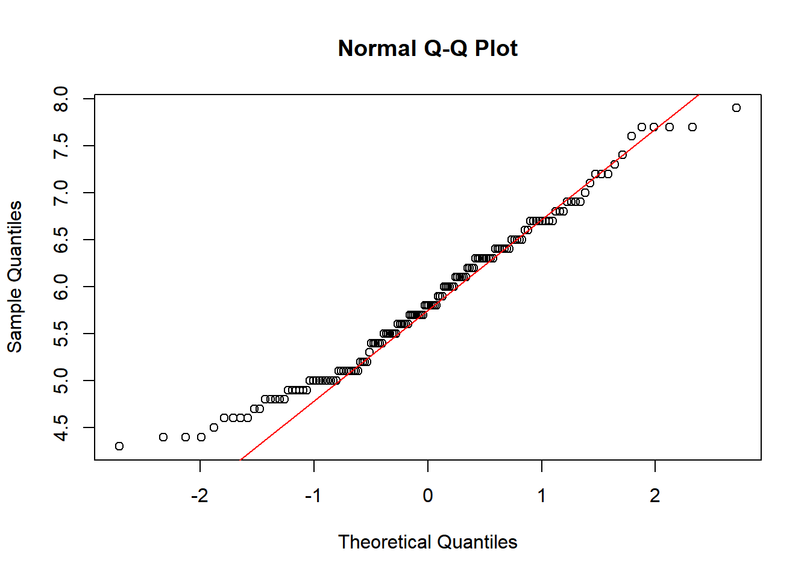
# 샤피로-윌크 검정에서 p-value가 0.05보다 작으므로 정규성을 따르지 않는다. 이때는 Wilcoxon signed-rank test를 진행한다.
# QQ-Plot은 시각화 하여 보여준다. 점들이 붉은색 직선 위에 잘 정렬되어 있다면 정규성을 만족하는 것으로 본다.
## Wilcoxon signed-rank test (정규성을 만족하지 않을 경우 비모수 검정 진행)
wilcox.test(iris$Sepal.Length, mu = 5.8)
Wilcoxon signed rank test with continuity correction
data: iris$Sepal.Length
V = 5358.5, p-value = 0.672
alternative hypothesis: true location is not equal to 5.8# p-value가 0.05보다 크므로 귀무가설(중위수(median)가 5.8이다)을 기각할 수 없습니다.
# t.test와 wilcox.test의 결과가 동일하다. 통계학에서 표본의 크기가 충분히 크면(보통 $n > 30$ 이상), 모집단의 분포가 정규분포가 아니더라도 표본 평균들의 분포는 정규분포에 가까워 진다. 샘플 개수가 많을때는 t.test는 정규성 가정이 조금 깨지더라도 상당히 강건(Robust)하게 작동한다.
# t.test: 데이터의 **'평균(Mean)'**을 직접 비교
# wilcox.test: 데이터의 **'순위(Rank)'**를 기반으로 중위수(Median)의 차이를 비교# 독립 표본 t-검정의 핵심 전제 조건
# 독립성: 두 그룹은 서로 영향을 주지 않아야 한다.
# 정규성: 각 그룹의 데이터가 정규분포를 따라야 한다.
# 등분산성: 두 그룹의 분산이 같아야 한다다. (var.test로 확인)
# 1. 데이터 필터링 (두 그룹만 추출)
filter_data <- iris %>% filter(Species %in% c("setosa", "versicolor"))
# 2. 정규성 검정 (각 그룹별로 수행)
shapiro.test(filter_data$Sepal.Length[filter_data$Species == "setosa"])
Shapiro-Wilk normality test
data: filter_data$Sepal.Length[filter_data$Species == "setosa"]
W = 0.9777, p-value = 0.4595shapiro.test(filter_data$Sepal.Length[filter_data$Species == "versicolor"])
Shapiro-Wilk normality test
data: filter_data$Sepal.Length[filter_data$Species == "versicolor"]
W = 0.97784, p-value = 0.4647# 정규성 검정 결과 setosa와 versicolor 모두 정규성을 만족한다.
# 3. 등분산성 검정
var.test(Sepal.Length ~ Species, data = filter_data)
F test to compare two variances
data: Sepal.Length by Species
F = 0.46634, num df = 49, denom df = 49, p-value = 0.008657
alternative hypothesis: true ratio of variances is not equal to 1
95 percent confidence interval:
0.2646385 0.8217841
sample estimates:
ratio of variances
0.4663429 # 등분산성 검정시 p-value가 0.05보다 작으므로 두 그룹은 분산이 서로 다르다.
# 4. 독립 표본 t-검정 수행
# 등분산성 검정 결과에 따라 var.equal 설정 (p > 0.05 이면 TRUE)
t.test(Sepal.Length ~ Species, data = filter_data, var.equal = FALSE)
Welch Two Sample t-test
data: Sepal.Length by Species
t = -10.521, df = 86.538, p-value < 2.2e-16
alternative hypothesis: true difference in means between group setosa and group versicolor is not equal to 0
95 percent confidence interval:
-1.1057074 -0.7542926
sample estimates:
mean in group setosa mean in group versicolor
5.006 5.936 # 두그룹의 분산이 다르므로로 t.test 진행시 var.equal = False를 지정하여 Welch's t-test 를 진행한다.
# Welch's t-test는 표준 t-test보다 더 보수적(안전한)이면서도 분산 불일치를 보정하여 왜곡 없는 결과를 제공한다.
# Welch's t-test 결과 두 그룹간 평균은 다르다.
boxplot(Sepal.Length ~ Species, data = filter_data,
main = "Sepal Length by Species",
col = c("lightblue", "lightgreen"))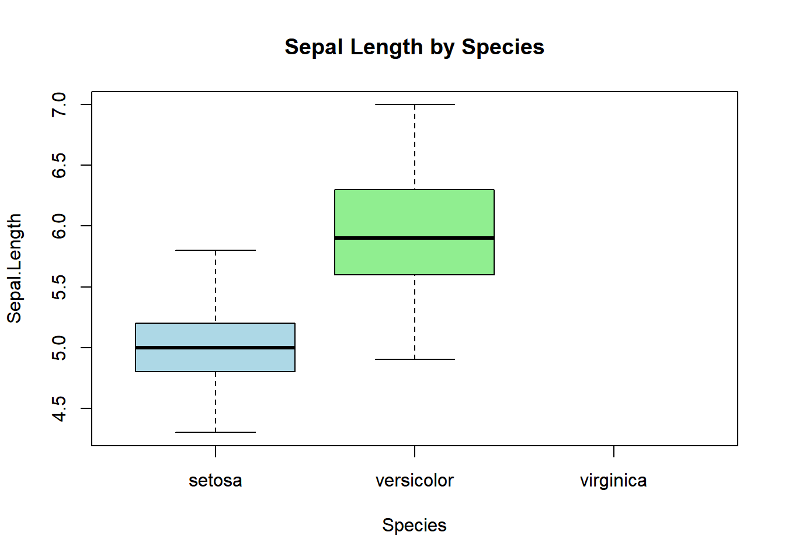
#sleep 데이터는 10명의 환자에게 두 가지 약물(group 1, group 2)을 투여하고 수면 시간의 변화를 측정한 데이터
sleep_wide <- sleep %>% pivot_wider(names_from = group, values_from = extra)
# Paired t-test는 두 데이터 쌍 간의 차이(diff = X - Y)가 0인지 검정하는 것
# 가정: 차이값(Sepal.Length - Sepal.Width)이 정규분포를 따라야 한다.
# 1. 차이값 계산
diff_sleep <- sleep_wide$`1` - sleep_wide$`2`
# 2. 정규성 검정
shapiro.test(diff_sleep)
Shapiro-Wilk normality test
data: diff_sleep
W = 0.82987, p-value = 0.03334# p-value가 0.05보다 작으므로 정규성을 만족하지 않는다.
# 3. QQ-plot 확인
qqnorm(diff_sleep)
qqline(diff_sleep, col = "red")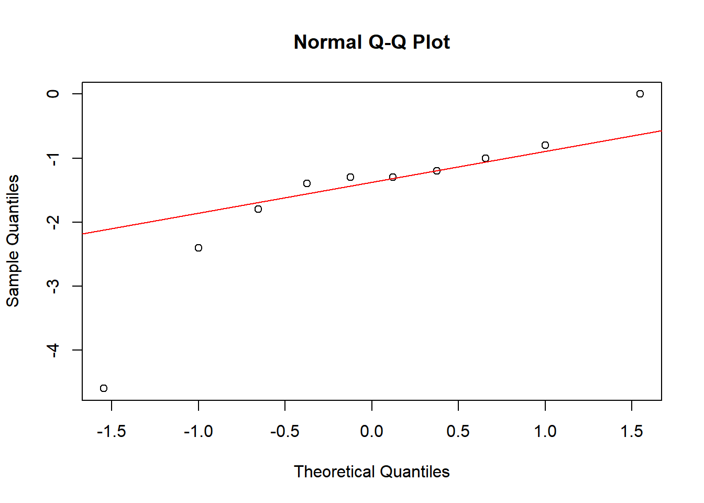
t.test(sleep_wide$`1`, sleep_wide$`2`, paired = TRUE)
Paired t-test
data: sleep_wide$`1` and sleep_wide$`2`
t = -4.0621, df = 9, p-value = 0.002833
alternative hypothesis: true mean difference is not equal to 0
95 percent confidence interval:
-2.4598858 -0.7001142
sample estimates:
mean difference
-1.58 #p-value가 0.05보다 작으므로 "두 약물(또는 처치) 간에는 수면 시간에 통계적으로 유의미한 차이가 있다"고 해석된다. 하지만, 정규성을 만족하지 못했으므로, 비모수 검정인 Wilcoxon signed-rank test를 사용한다.
wilcox.test(sleep_wide$`1`, sleep_wide$`2`, paired = TRUE)
Wilcoxon signed rank test with continuity correction
data: sleep_wide$`1` and sleep_wide$`2`
V = 0, p-value = 0.009091
alternative hypothesis: true location shift is not equal to 0# wilcox.test에서도 p-value가 0.05보다 작아 약물 두 약물간에는 유의미한 차이가 있다.#palmerpenguins data를 사용하여 ANOVA 분석 진행
#palmerpenguins 데이터에서 펭귄의 종(species: Adelie, Chinstrap, Gentoo)에 따라 부리 길이(bill_length_mm)의 평균이 다른지 검정
#ANOVA도 선행검정 필요(정규성, 등분산성, 독립성)
#정규성: 각 종별 부리 길이가 정규분포를 따르는가?
#등분산성: 모든 종의 부리 길이 분산이 동일한가?
#독립성: 각 측정치는 독립적인가?
###일원분산분석 (One-way ANOVA)
# 1. 데이터 정제 (결측치 제거)
penguins_clean <- penguins %>%
filter(!is.na(bill_length_mm))
# 2. 선행 검정: 등분산성 확인 (Levene's Test)
car::leveneTest(bill_length_mm ~ species, data = penguins_clean)Levene's Test for Homogeneity of Variance (center = median)
Df F value Pr(>F)
group 2 2.2425 0.1078
339 # p-value가 0.05보다 크므로 종간 분산이 같다.
# 만일 p-value가 0.05보다 작아서 등분산성이 만족하지 않으면, oneway.test(..., var.equal = FALSE)를 사용해야 한다. oneway.test는 Welch’s ANOVA라고도 불리는 분석을 수행한다. 이전에 Two-sample t-test에서 등분산성이 아닐 때 Welch's t-test를 썼던 것과 동일한한 논리
# 4. One-way ANOVA 수행
anova_result <- aov(bill_length_mm ~ species, data = penguins_clean)
summary(anova_result) Df Sum Sq Mean Sq F value Pr(>F)
species 2 7194 3597 410.6 <2e-16 ***
Residuals 339 2970 9
---
Signif. codes: 0 '***' 0.001 '**' 0.01 '*' 0.05 '.' 0.1 ' ' 1# p-value가 0.05보다 작으므로 종간 부리길이 평균이 유의미한 차이가 있다.
# 5. 사후 검정 수행
TukeyHSD(anova_result) Tukey multiple comparisons of means
95% family-wise confidence level
Fit: aov(formula = bill_length_mm ~ species, data = penguins_clean)
$species
diff lwr upr p adj
Chinstrap-Adelie 10.042433 9.024859 11.0600064 0.0000000
Gentoo-Adelie 8.713487 7.867194 9.5597807 0.0000000
Gentoo-Chinstrap -1.328945 -2.381868 -0.2760231 0.0088993# ANOVA 결과에서 p-value가 0.05보다 작다면, "세 집단 중 적어도 어느 한 집단은 평균이 다르다"는 것을 의미한다. 하지만 정확히 어떤 종들끼리 차이가 나는지는 알려주지 않으므로 Tukey HSD 검정을 진행하여 종간 차이를 확인한다.
# 6. 시각화로 확인
plot(TukeyHSD(anova_result), las = 1)boxplot(bill_length_mm ~ species, data = penguins_clean,
main = "Bill Length by Species",
xlab = "Species", ylab = "Bill Length (mm)",
col = c("orange", "purple", "cyan"))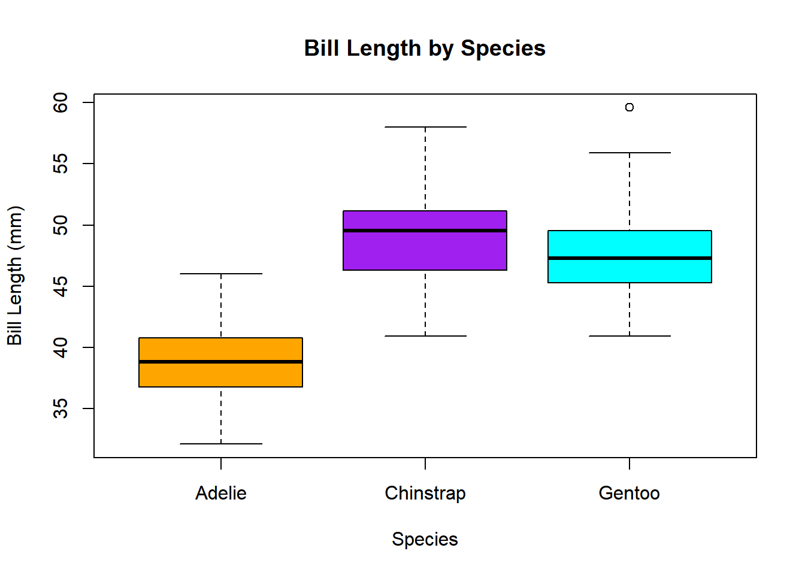
## 등분산성을 만족하지 않을때는, oneway.test(var.equal = FALSE)를 진행한다.
# Welch's ANOVA 수행
welch_anova <- oneway.test(bill_length_mm ~ species,
data = penguins_clean,
var.equal = FALSE)
welch_anova
One-way analysis of means (not assuming equal variances)
data: bill_length_mm and species
F = 421.77, num df = 2.00, denom df = 166.47, p-value < 2.2e-16#등분산성이 깨진 상태에서의 사후 검정은 TukeyHSD가 아니라 Games-Howell 검정이라는 별도의 방법을 사용한다.
penguins_clean %>% rstatix::games_howell_test(bill_length_mm ~ species)# A tibble: 3 × 8
.y. group1 group2 estimate conf.low conf.high p.adj p.adj.signif
* <chr> <chr> <chr> <dbl> <dbl> <dbl> <dbl> <chr>
1 bill_length_mm Adelie Chins… 10.0 8.95 11.1 0 ****
2 bill_length_mm Adelie Gentoo 8.71 7.88 9.54 0 ****
3 bill_length_mm Chinstrap Gentoo -1.33 -2.49 -0.164 0.021 * ###이원분산분석 (Two-way ANOVA)
# Two-way ANOVA(이원 분산 분석)는 두 개의 독립 변수(범주형)가 하나의 종속 변수(연속형)에 미치는 영향을 동시에 분석하는 방법이다.
# Two-way ANOVA에서는 단순히 각 변수의 개별 영향(주효과)뿐만 아니라, 두 변수가 결합되어 나타나는 상호작용 효과(Interaction Effect)를 확인하는 것이 핵심이다.
# 주효과(Main Effect): 종에 따라 부리 길이가 다른가? 섬에 따라 부리 길이가 다른가?
# 상호작용 효과: 특정 섬에 사는 특정 종의 부리 길이만 유독 더 길거나 짧은가?
# Two-way ANOVA 모델 생성
# '*' 기호는 주효과와 상호작용 효과를 모두 포함하게 한다.
two_way_anova <- aov(bill_length_mm ~ species * island, data = penguins_clean)
summary(two_way_anova) Df Sum Sq Mean Sq F value Pr(>F)
species 2 7194 3597 409.208 <2e-16 ***
island 2 7 4 0.425 0.654
Residuals 337 2962 9
---
Signif. codes: 0 '***' 0.001 '**' 0.01 '*' 0.05 '.' 0.1 ' ' 1# 검정결과, species는 매우 유의미 하며, island는 유의미 하지 않는다. 하지만, 코드에서는 species * island로 입력하였으나 species:island(상호작용) 결과가 나오지 않았다.
# 이유는 아래와 같이 특정 섬에는 특정 종만 살고 있기 때문에 모든 종과 모든 섬의 조합을 계산할 수 없어서 R이 자동으로 상호작용 항을 제거하거나 계산하지 못하였다.
penguins_clean %>% count(island, species)# A tibble: 5 × 3
island species n
<fct> <fct> <int>
1 Biscoe Adelie 44
2 Biscoe Gentoo 123
3 Dream Adelie 56
4 Dream Chinstrap 68
5 Torgersen Adelie 51# 아래와 같은 경우는 상호작용(species:sex) 결과를 확인 할 수 있다.
penguins_sex_clean <- penguins_clean %>% filter(!is.na(sex))
two_way_sex <- aov(bill_length_mm ~ species * sex, data = penguins_sex_clean)
summary(two_way_sex) Df Sum Sq Mean Sq F value Pr(>F)
species 2 7015 3508 654.189 <2e-16 ***
sex 1 1136 1136 211.807 <2e-16 ***
species:sex 2 24 12 2.284 0.103
Residuals 327 1753 5
---
Signif. codes: 0 '***' 0.001 '**' 0.01 '*' 0.05 '.' 0.1 ' ' 1#사후 검정
TukeyHSD(two_way_sex) Tukey multiple comparisons of means
95% family-wise confidence level
Fit: aov(formula = bill_length_mm ~ species * sex, data = penguins_sex_clean)
$species
diff lwr upr p adj
Chinstrap-Adelie 10.009851 9.209424 10.8102782 0.0000000
Gentoo-Adelie 8.744095 8.070779 9.4174106 0.0000000
Gentoo-Chinstrap -1.265756 -2.094535 -0.4369773 0.0010847
$sex
diff lwr upr p adj
male-female 3.693368 3.194089 4.192646 0
$`species:sex`
diff lwr upr p adj
Chinstrap:female-Adelie:female 9.315995 7.937732 10.6942588 0.0000000
Gentoo:female-Adelie:female 8.306259 7.138639 9.4738788 0.0000000
Adelie:male-Adelie:female 3.132877 2.034137 4.2316165 0.0000000
Chinstrap:male-Adelie:female 13.836583 12.458320 15.2148470 0.0000000
Gentoo:male-Adelie:female 12.216236 11.064727 13.3677453 0.0000000
Gentoo:female-Chinstrap:female -1.009736 -2.443514 0.4240412 0.3338130
Adelie:male-Chinstrap:female -6.183118 -7.561382 -4.8048548 0.0000000
Chinstrap:male-Chinstrap:female 4.520588 2.910622 6.1305547 0.0000000
Gentoo:male-Chinstrap:female 2.900241 1.479553 4.3209291 0.0000002
Adelie:male-Gentoo:female -5.173382 -6.341002 -4.0057622 0.0000000
Chinstrap:male-Gentoo:female 5.530325 4.096547 6.9641020 0.0000000
Gentoo:male-Gentoo:female 3.909977 2.692570 5.1273846 0.0000000
Chinstrap:male-Adelie:male 10.703707 9.325443 12.0819703 0.0000000
Gentoo:male-Adelie:male 9.083360 7.931851 10.2348686 0.0000000
Gentoo:male-Chinstrap:male -1.620347 -3.041035 -0.1996591 0.0149963plot(TukeyHSD(two_way_sex), las = 1)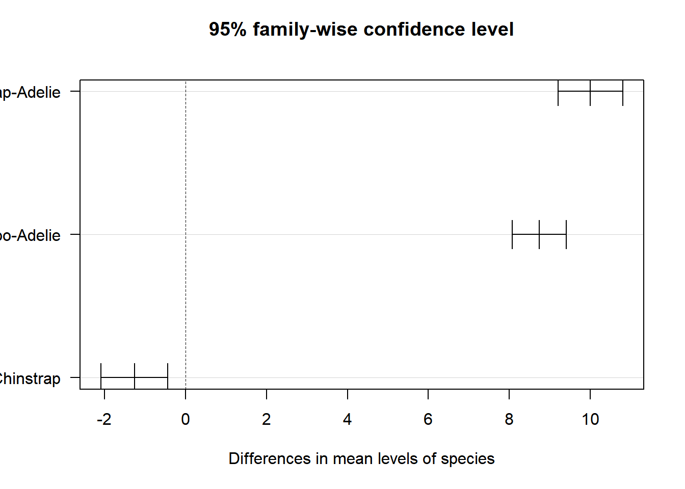
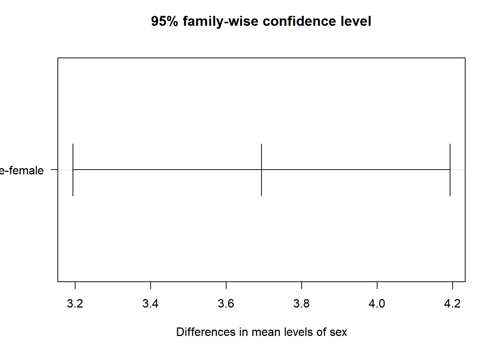
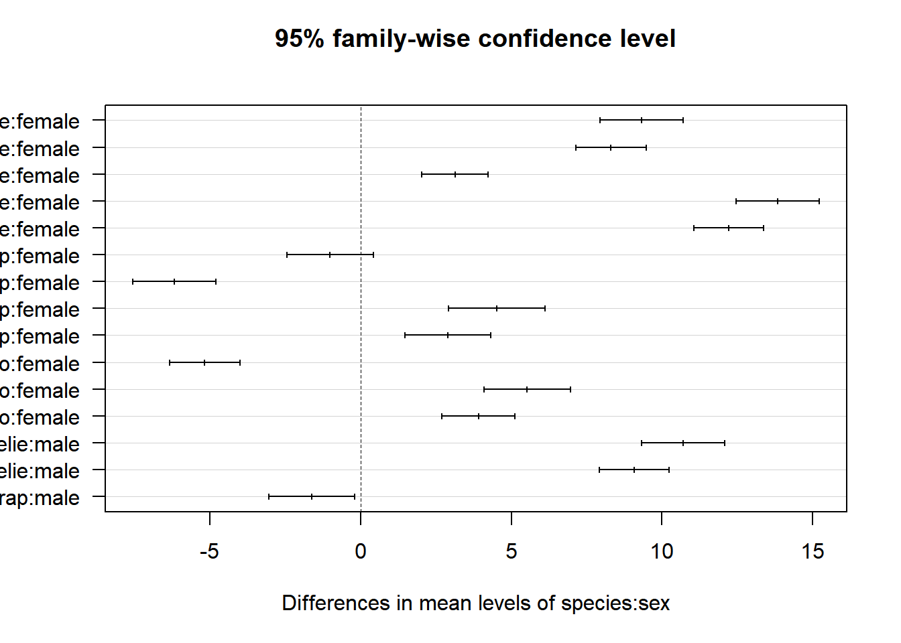
# 사후 검정시 emmeans 패키지를 사용하면 TukeyHSD보다 더 유연한 분석을 할 수 있다.
# emmeans(Estimated Marginal Means /추정된 한계 평균)의 약자로, 복잡한 통계 모델(ANOVA, 회귀분석 등)을 돌린 후 "그래서 각 그룹의 평균이 구체적으로 얼마고, 서로 어떻게 다른가?" 를 파헤치기 위해 사용하는 사후 분석 방법이다.
# palmerpenguins처럼 그룹별 샘플 수가 다를 때(Unbalanced data), 일반적인 평균값보다 더 정확한 수정된 평균(Estimated Marginal Means)을 사용한다.
# 회귀분석(Regression), 공분산 분석(ANCOVA), 혼합 효과 모델(Mixed Models) 등 다양한 모델에 적용가능하고, 조건 걸기가 자유로워 유연한 분석을 할 수 있다.
# 성별을 고정하고 종 간의 차이를 비교
em_species_by_sex <- emmeans(two_way_sex, ~ species | sex)
pairs(em_species_by_sex, adjust = "tukey")sex = female:
contrast estimate SE df t.ratio p.value
Adelie - Chinstrap -9.32 0.481 327 -19.377 <0.0001
Adelie - Gentoo -8.31 0.407 327 -20.393 <0.0001
Chinstrap - Gentoo 1.01 0.500 327 2.019 0.1093
sex = male:
contrast estimate SE df t.ratio p.value
Adelie - Chinstrap -10.70 0.481 327 -22.263 <0.0001
Adelie - Gentoo -9.08 0.402 327 -22.613 <0.0001
Chinstrap - Gentoo 1.62 0.496 327 3.270 0.0034
P value adjustment: tukey method for comparing a family of 3 estimates # 모든 조합 간의 비교
em_all <- emmeans(two_way_sex, pairwise ~ species * sex)
em_all$contrasts # 상세 비교 결과만 출력 contrast estimate SE df t.ratio p.value
Adelie female - Chinstrap female -9.32 0.481 327 -19.377 <0.0001
Adelie female - Gentoo female -8.31 0.407 327 -20.393 <0.0001
Adelie female - Adelie male -3.13 0.383 327 -8.174 <0.0001
Adelie female - Chinstrap male -13.84 0.481 327 -28.779 <0.0001
Adelie female - Gentoo male -12.22 0.402 327 -30.413 <0.0001
Chinstrap female - Gentoo female 1.01 0.500 327 2.019 0.3338
Chinstrap female - Adelie male 6.18 0.481 327 12.860 <0.0001
Chinstrap female - Chinstrap male -4.52 0.562 327 -8.049 <0.0001
Chinstrap female - Gentoo male -2.90 0.496 327 -5.852 <0.0001
Gentoo female - Adelie male 5.17 0.407 327 12.702 <0.0001
Gentoo female - Chinstrap male -5.53 0.500 327 -11.057 <0.0001
Gentoo female - Gentoo male -3.91 0.425 327 -9.207 <0.0001
Adelie male - Chinstrap male -10.70 0.481 327 -22.263 <0.0001
Adelie male - Gentoo male -9.08 0.402 327 -22.613 <0.0001
Chinstrap male - Gentoo male 1.62 0.496 327 3.270 0.0150
P value adjustment: tukey method for comparing a family of 6 estimates # 상호작용 및 평균 지점 시각화
emmip(two_way_sex, sex ~ species, CIs = T) #CIs는 신뢰구간(Confidence Interval)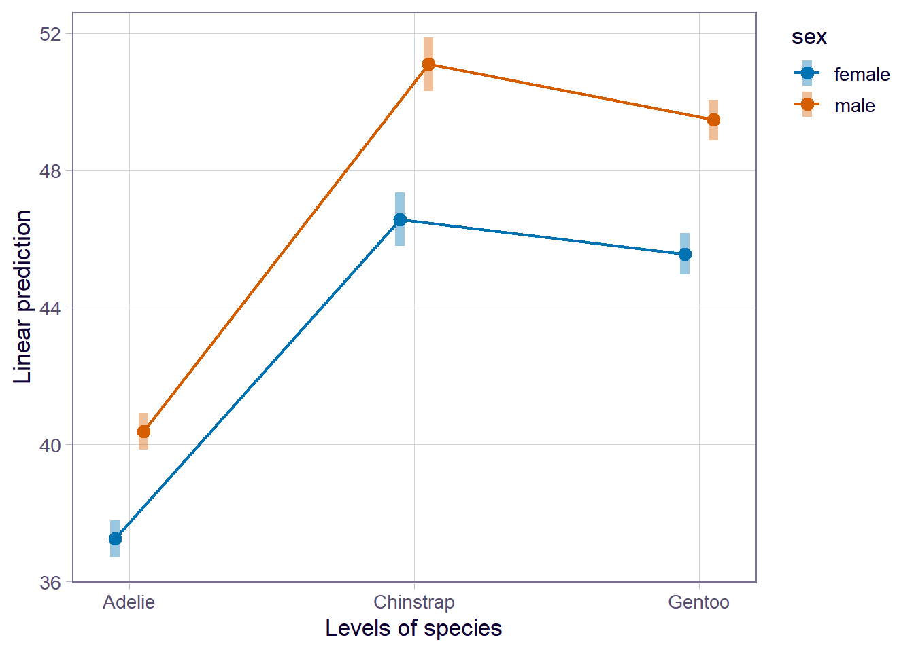
정답(Label)이 있는 데이터를 학습하여 예측하는 방법입니다.
의사결정나무 (Decision Tree): 해석력이 좋아 시각화 문제로 자주 출제됩니다. (과적합 방지를 위한 가지치기 필수)
랜덤 포레스트 (Random Forest): 앙상블의 기본. 배깅(Bagging) 기법을 이해해야 합니다.
XGBoost / LightGBM: 실무 및 시험에서 가장 성능이 좋은 부스팅(Boosting) 모델입니다. (Hyperparameter 튜닝 포함)
로지스틱 회귀 (Logistic Regression): 분류 문제의 베이스라인 모델로, 오즈비(Odds Ratio) 해석이 중요합니다.
나이브 베이즈 (Naive Bayes): 텍스트 분류나 베이즈 정리를 이용한 확률적 분류.
선형 회귀 (Linear Regression): 다중공선성(VIF) 확인과 변수 선택법(Stepwise)이 핵심입니다.
규제 선형 모델 (Regularization): Ridge(L2), Lasso(L1), ElasticNet의 차이와 페널티 항을 이해해야 합니다.
정답 없이 데이터 자체의 구조나 패턴을 찾는 방법입니다.
군집 분석 (Clustering):
K-Means: 엘보우 포인트(Elbow Point)나 실루엣 계수(Silhouette Coefficient)를 통한 최적의 K 산출.
계층적 군집 (Hierarchical Clustering): 덴드로그램(Dendrogram) 시각화.
DBSCAN: 밀도 기반 군집화 (이상치 탐지에 유용).
차원 축소 (Dimensionality Reduction):
연관 규칙 분석 (Association Rule): * Apriori 알고리즘: 지지도(Support), 신뢰도(Confidence), 향상도(Lift) 지표 해석이 필수입니다.
모델을 만드는 것보다 **“이 모델이 왜 좋은가?”**를 증명하는 것이 점수의 핵심입니다.
분류 평가 지표: 혼동 행렬(Confusion Matrix), 정확도, 정밀도, 재현율, F1-Score, ROC-AUC 곡선.
회귀 평가 지표: MSE, RMSE, MAE, \(R^2\) (결정계수).
교차 검증 (Cross-Validation): K-Fold, Stratified K-Fold.
데이터 마이닝 전 단계에서 반드시 수행해야 하며, 코드로 구현 가능해야 합니다.
결측치 처리: 단순 제거 vs 평균/중위수/최빈값 대체 vs KNN/Iterative Imputer 활용.
이상치 탐지: IQR(Interquartile Range) 방식, Z-score 방식.
데이터 변환: 스케일링(Standard, Min-Max), 로그 변환(왜도 제거), 원-핫 인코딩(범주형 데이터).
변수 선택 (Feature Selection): RFE(Recursive Feature Elimination), 모델 중요도(Feature Importance) 기반 추출.
ADP 실기 시험에서 데이터 마이닝 파트는 가장 배점이 높고 합격의 당락을 결정짓는 핵심 구간입니다. 단순히 모델을 돌리는 것뿐만 아니라, 데이터 전처리, 모델링, 성능 평가, 그리고 비즈니스 관점의 해석까지 이어지는 파이프라인을 완벽히 숙지해야 합니다.
ADP 실기는 시간이 부족합니다. 따라서 다음과 같은 나만의 템플릿 코드를 미리 준비하는 것이 좋습니다.
시각화 템플릿: 히스토그램, 박스플롯, 상관관계 히트맵 코드.
하이퍼파라미터 튜닝: GridSearchCV 또는 RandomizedSearchCV 기본 틀.
불균형 데이터 처리: SMOTE 같은 오버샘플링 기법 (분류 문제에서 자주 발생).
혹시 이 중에서 **“분류 모델 생성부터 평가 지표 산출까지의 전체 파이썬 코드 흐름”**을 예시로 보여드릴까요? 가장 점수 비중이 큽니다.
library(caret)
# 데이터 분할 (7:3)
set.seed(123)
train_idx <- createDataPartition(iris$Species, p = 0.7, list = FALSE)
train_data <- iris[train_idx, ]
test_data <- iris[-train_idx, ]
# 스케일링 (필요시 수행, Random Forest는 필수는 아님)
# preProc <- preProcess(train_data, method = c("center", "scale"))
# train_scaled <- predict(preProc, train_data)
library(randomForest)
# 모델 생성
rf_model <- randomForest(Species ~ ., data = train_data,
ntree = 500, importance = TRUE)
# 변수 중요도 확인 (ADP에서 자주 묻는 질문)
importance(rf_model) setosa versicolor virginica MeanDecreaseAccuracy
Sepal.Length 7.087994 7.631919 7.235017 10.485142
Sepal.Width 4.794019 3.109214 4.377026 6.184528
Petal.Length 21.337913 27.845947 26.689462 32.584052
Petal.Width 22.461038 29.918210 32.954369 34.574219
MeanDecreaseGini
Sepal.Length 7.382036
Sepal.Width 1.527942
Petal.Length 29.418350
Petal.Width 30.947481varImpPlot(rf_model)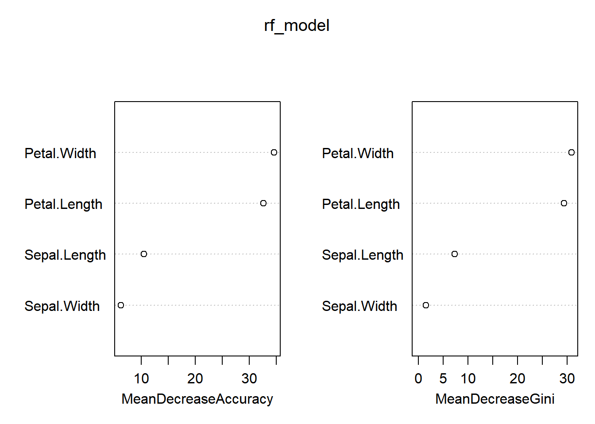
# 예측
pred <- predict(rf_model, test_data)
# 혼동 행렬 (Confusion Matrix) 및 지표 산출
confusionMatrix(pred, test_data$Species)Confusion Matrix and Statistics
Reference
Prediction setosa versicolor virginica
setosa 15 0 0
versicolor 0 14 2
virginica 0 1 13
Overall Statistics
Accuracy : 0.9333
95% CI : (0.8173, 0.986)
No Information Rate : 0.3333
P-Value [Acc > NIR] : < 2.2e-16
Kappa : 0.9
Mcnemar's Test P-Value : NA
Statistics by Class:
Class: setosa Class: versicolor Class: virginica
Sensitivity 1.0000 0.9333 0.8667
Specificity 1.0000 0.9333 0.9667
Pos Pred Value 1.0000 0.8750 0.9286
Neg Pred Value 1.0000 0.9655 0.9355
Prevalence 0.3333 0.3333 0.3333
Detection Rate 0.3333 0.3111 0.2889
Detection Prevalence 0.3333 0.3556 0.3111
Balanced Accuracy 1.0000 0.9333 0.9167# 모델 생성
lm_model <- lm(Sepal.Length ~ ., data = train_data)
# 요약 결과 확인 (p-value, R-squared 확인)
summary(lm_model)
Call:
lm(formula = Sepal.Length ~ ., data = train_data)
Residuals:
Min 1Q Median 3Q Max
-0.66983 -0.25646 0.01407 0.22213 0.70372
Coefficients:
Estimate Std. Error t value Pr(>|t|)
(Intercept) 2.14087 0.33840 6.326 7.32e-09 ***
Sepal.Width 0.50451 0.10640 4.742 7.12e-06 ***
Petal.Length 0.81894 0.08337 9.823 2.66e-16 ***
Petal.Width -0.22683 0.18239 -1.244 0.21656
Speciesversicolor -0.78878 0.29714 -2.655 0.00925 **
Speciesvirginica -1.13193 0.41887 -2.702 0.00810 **
---
Signif. codes: 0 '***' 0.001 '**' 0.01 '*' 0.05 '.' 0.1 ' ' 1
Residual standard error: 0.3142 on 99 degrees of freedom
Multiple R-squared: 0.8697, Adjusted R-squared: 0.8631
F-statistic: 132.2 on 5 and 99 DF, p-value: < 2.2e-16# 다중공선성 확인 (VIF 10 이상이면 위험)
vif(lm_model) GVIF Df GVIF^(1/(2*Df))
Sepal.Width 1.992304 1 1.411490
Petal.Length 23.083942 1 4.804575
Petal.Width 20.810109 1 4.561810
Species 41.580209 2 2.539345# 잔차 진단 (회귀 분석의 4대 가정 확인)
plot(lm_model)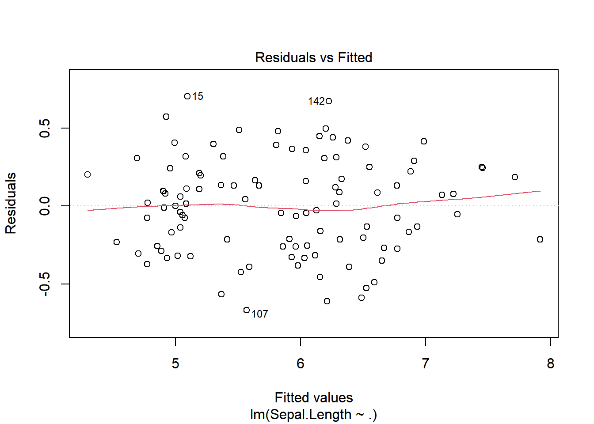
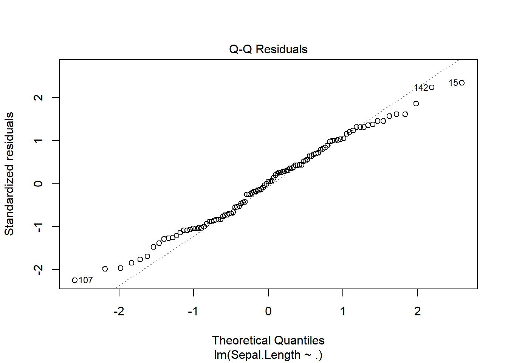
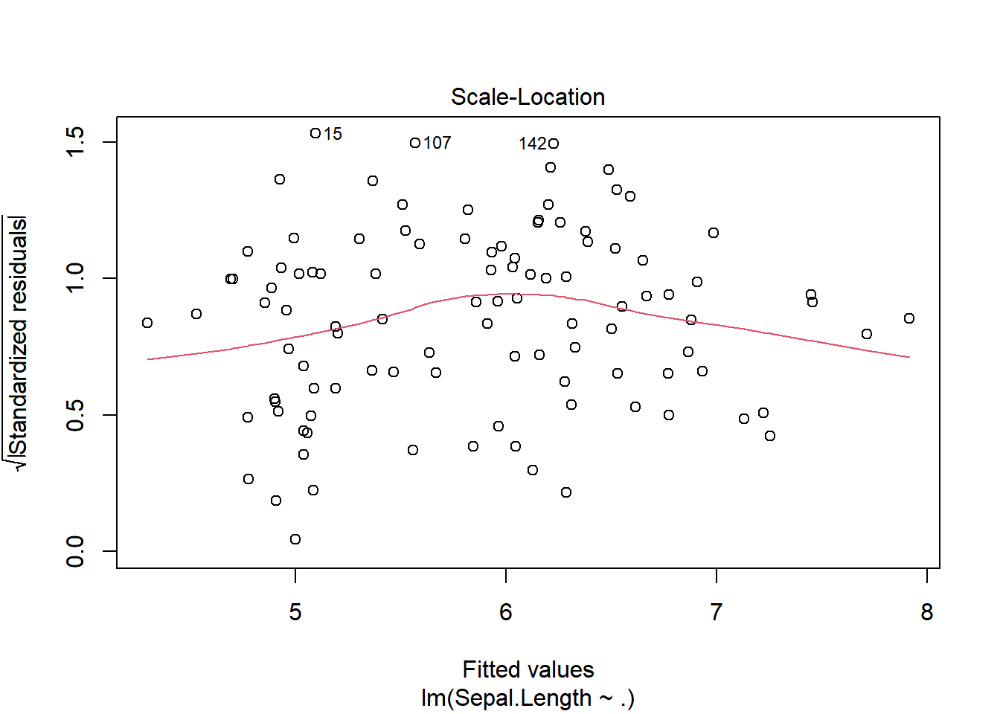
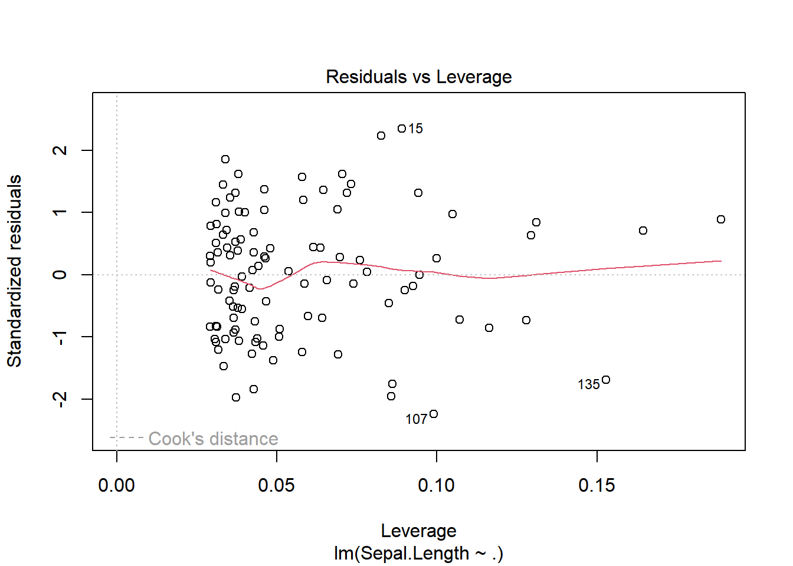
최근 ADP 실기에서 비중이 매우 높아진 파트입니다. 단순 회귀와는 접근 방식이 완전히 다릅니다.
정상성(Stationarity) 확인: adf.test()(ADF 검정)를 통해 데이터가 안정적인지 확인.
차분(Differencing): 비정상 시계열을 정상성 있게 변환.
ARIMA 모델: auto.arima()를 활용한 최적 모델 결정 및 향후 N기 예측.
지수평활법: Simple, Holt, Holt-Winters 모델 구분.
비정형 데이터 분석 문제가 한 문제씩 꼭 섞여 나옵니다. R에서는 tm, KoNLP(한글), tidytext 패키지를 주로 사용합니다.
전처리: 코퍼스(Corpus) 생성, 특수문자/숫자 제거, 불용어(Stopwords) 처리.
문서-단어 행렬(DTM/TDM): 텍스트를 수치형 매트릭스로 변환.
워드클라우드 & 감성 분석: 단어 빈도 시각화 및 긍정/부정 분류.
LDA (Topic Modeling): 문서 집합에서 잠재적인 주제(Topic) 추출.
단순히 결측치를 채우는 수준을 넘어, 분석의 질을 결정하는 단계입니다.
불균형 데이터 처리 (Imbalanced Data): * 분류 문제에서 특정 클래스가 너무 적을 때 SMOTE, Under/Over Sampling 기법 적용.
변수 선택 (Feature Selection): * Filter: 상관계수 기반.
Wrapper: 전진 선택법(Forward), 후진 제거법(Backward), 단계적 선택법(Stepwise).
Embedded: Lasso, Ridge 회귀를 통한 변수 자동 선택.
차원 축소: PCA(주성분 분석) 후 주성분 개수 결정(Scree Plot 확인).
ADP는 결과 코드만큼 **‘해석’**이 중요합니다. 다음 문장 구조를 외우세요.
가설 설정: “귀무가설(\(H_0\))은 ~이다. 대립가설(\(H_1\))은 ~이다.”
분석 수행: (R 코드 작성)
결과 해석: “검정 통계량은 X이며, p-value는 0.0XX로 유의수준 0.05보다 작으므로 귀무가설을 기각한다.”
비즈니스 결론: “따라서 A 공장과 B 공장의 제품 무게에는 통계적으로 유의미한 차이가 있다고 볼 수 있다.”